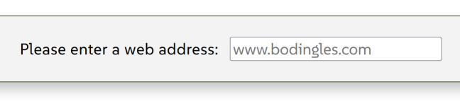
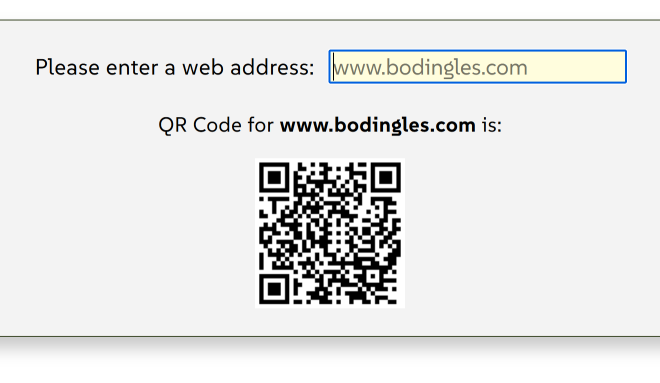

Intro
We're going to build a QR Code Generator app which will allow the user to input a web address and have it converted into a QR Code that can be scanned. This is a pretty simple project to demonstrate how to find, install, initialize, and manipulate an npm package to achieve a desired result. The finnal code and all files related to this project can be downloaded here.
Here is what the Input will look like:

and here is what the Output will look like:

To achieve our goals we're going to be using a npm package called qrcode-generator. All of the information we need to make this package work for our needs is documented on the package website.
Directory Structure
The first thing we need to do is to get our working environment set up. So we're going to set up the following basic directory structure:
 qrGenerator
qrGenerator
 qrGenerator.html
qrGenerator.html index.js
index.js
Install our Package
If we look at our node npm documentation, we can see that the next thing we need to do is to initialize npm, and then install our qrcode-generator package. So in our terminal app of choice, or from the VsCode terminal we initialize npm:
This will initialize the node npm environment and add the file:
 package.json
package.json
This is the npm configuration file for our project. Next we install our qrcode-generator package. According to the documentation, we run:
This will install our npm package, and add the following folder, and file:
- node_modules
- package-lock.json
So our completed directory structure now looks like this:
- qrGenerator
- node_modules
- qrGenerator.html
- index.js
- package.json
- package-lock.json
This is our completed working environment. Let's take a look at our package.json file:
- package.json
- {
- "name": "qr_gen",
- "version": "1.0.0",
- "description": "QR Code Generator",
- "license": "ISC",
- "author": "badDoggy",
- "type": "commonjs",
- "main": "index.js",
- "scripts": {
- "test": "echo \"Error: no test specified\" && exit 1"
- },
- "dependencies": {
- "qrcode-generator": "^1.5.0"
- }
- }
This becomes our initialization file for our npm package. Notice that it set's our "main" Js file as index.js and that this application is "dependant" on the "qrcode-generator": "^1.5.0" package.
So our project now has all the basics set up. Our directory structure is set up. NPM is initialized. And our qrcode-generator package is installed and ready to go. Next we start writing the code to put it all together and make it work.
The HTML
The html is pretty simple here. We have a text input to allow the user to input a web address for conversion to a QR Code. We have a <p> element to display some text output. And we have a <div> placeholder to display the returned QR Code. Here is the code:
- HTML
- <div class="container">
- <div class="formInput">
- <label for="textInput">Please enter a web address:</label>
- <input id="textInput" type="text" placeholder="www.bodingles.com">
- </div>
- <div class="output"></div>
- <div id="placeHolder"></div>
- </div>
Once the user enters a web address into the text input field, the text output <div> displays the output that the QR Code is generated for, and the placeHolder <div> displays the actual QR Code output. This is all controlled and processed in our JavaScript file.
One last thing to address here on the HTML side is that we have to include a <script> element to reference our index.js file. Also, according the the package documentation, we need to add another <script> element, so we're going to add the following two lines of code to our HTML file.
- HTML
- <script src="./node_modules/qrcode-generator/qrcode.js" type="text/javascript"></script>
- <script src="./index.js"></script>
Remember, these go at the very bottom of the HTML file, right before the closing <body> element. And this will conclude our HTML code process.
The CSS
All the CSS is doing in this case is some very basic font and color styling, so we're not going to cover it here. But it will be included in the final code package.
The JavaScript
And now for the fun stuff. So the JavaScript is going to take the input from a form, and convert it into a scannable QR Code. It then displays a message confirming what the QR Code is for. And finally, displays the QR Code output. We're going to list the code and then break it all down.
- JavaScript
- let outPut = document.querySelector(".output");
- let QR CodeOutput = document.querySelector("#placeHolder");
-
- const typeNumber = 4;
- const errorCorrectionLevel = 'M';
-
- $(document).on("keypress", "input", function(evt) {
- if (evt.which == 13) {
- let inputVal = $(this).val();
- if (inputVal === "">) {
- inputVal = "www.bodingles.com";
- }
-
- outPut.innerHTML = `<p>QR Code for <b>${inputVal}</b> is:</p>`;
- let qr = qrcode( typeNumber, errorCorrectionLevel );
- qr.addData( inputVal );
- qr.make();
- barcodeOutput.innerHTML = qr.createImgTag( 4, 4 );
- }
- });
-
- textInput.addEventListener('click', () => {
- textInput.value = "";
- outPut.innerText = "";
- barcodeOutput.innerHTML = "";
- qr = "";
- });
So we're using JavaScript here with a little jQuery. We've got a keypress event to submit the form input for processing. And we've got a click event to reset the form and start over.
We've set a default address as www.bodingles.com so that if the user just presses ENTER without changing the default (displayed with the text input "placeholder"), we still have some data to process for the output. Otherwise, when the user inputs a web address and presses ENTER, it submits the data for processing. If they "click again inside the text input, the whole thing resets to accept a new input.
Let's go ahead and break this code down. To start, we're going to initialize our variables:
- outPut: is for the text display the confirms what the QR Code if representing.
- barcodeOutput: is the actual QR Code output.
The next two variables are for the code generator:
- typeNumber: is setting the barcode type to 4.
- errorCorrectionLevel: is setting the error correction level for the QR Code to Medium.
The next step is to process the keypress event. Notice the use of jQuery here, and also that we are "trapping" for keypress 13, which is the ENTER key. So the code will ignore any keypress other that the ENTER key.
Once it detects that the ENTER key was pressed, it checks to see if an "empty string" was passed in. This would mean that the user did not enter in a value, so the default is assigned to the variable. So inputVal will either represent the user input, or "www.bodingles.com", which is the default.
At this point we have our data for processing (inputVal), so we run the following:
- outPut.innerHTML
- - displays a text output to confirm what the QR Code was generated for.
- let qr = qrcode( typeNumber, errorCorrectionLevel );
- - this code initializes a NEW qr object - the variables were declared above when we defined all of our variables.
- qr.addData( inputVal );
- - this is adding our user input data to the qr object
- qr.make();
- - this is using our npm package to actually generate the QR Code.
- barcodeOutput.innerHTML = qr.createImgTag( 4, 4 );
- - this is outputting the barcode image. Note the variables passed into the createImgTag() function. According to the qrcode-generator documentation:
- ~ the first number is defining the "cell size" (the size of the QR Code image).
- ~ the second number is defining the "margin size" around the QR Code image.
And now, all that is left is to reset the process for new input, if the user clicks inside of our text input. We do this with the click event listener on the textInput, which is the actual form text input.
Because of time constraints on this lesson, we have not incorporated any error checking to ensure that only a valid web address is entered. We will revisit this and update the code when time permits.